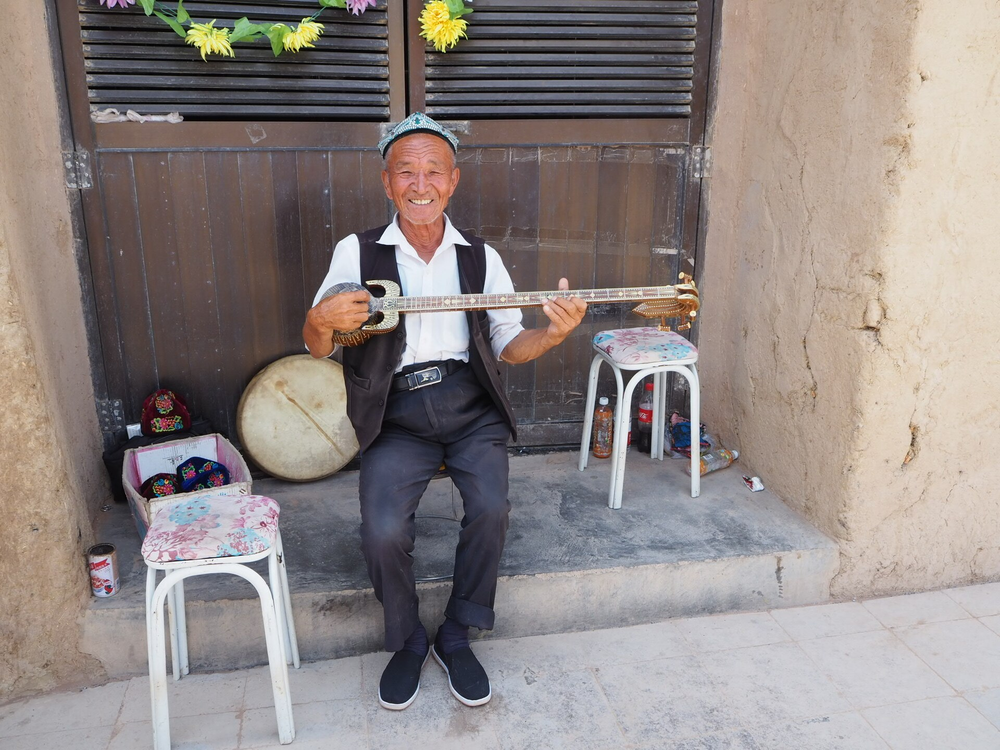
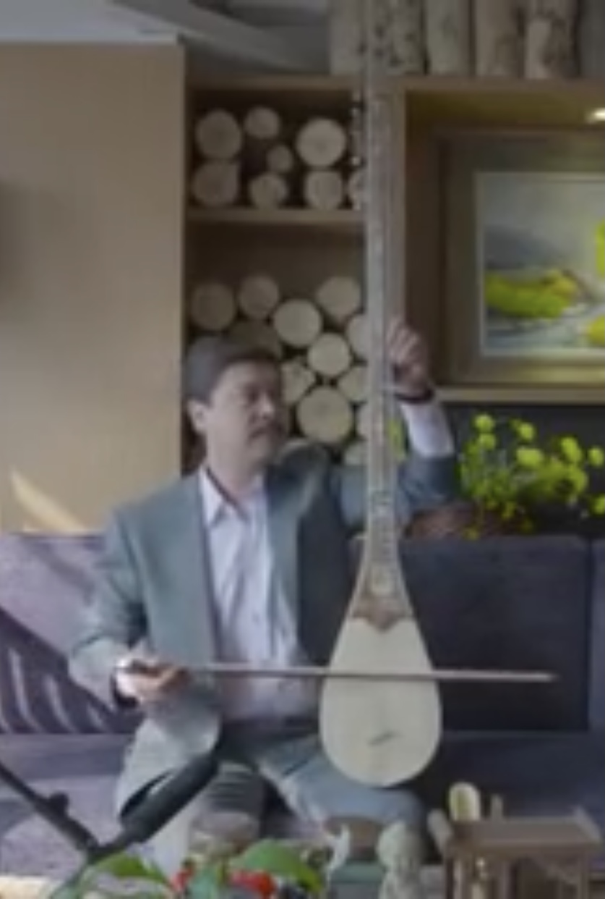
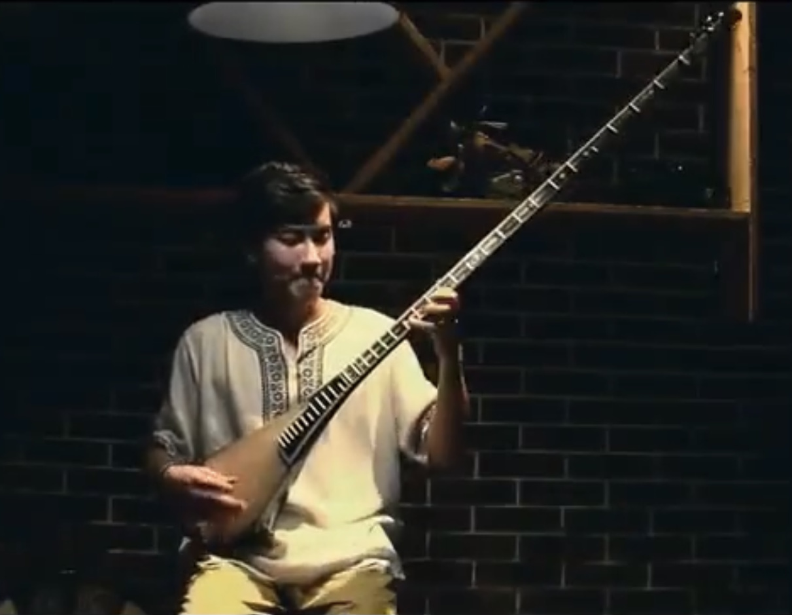
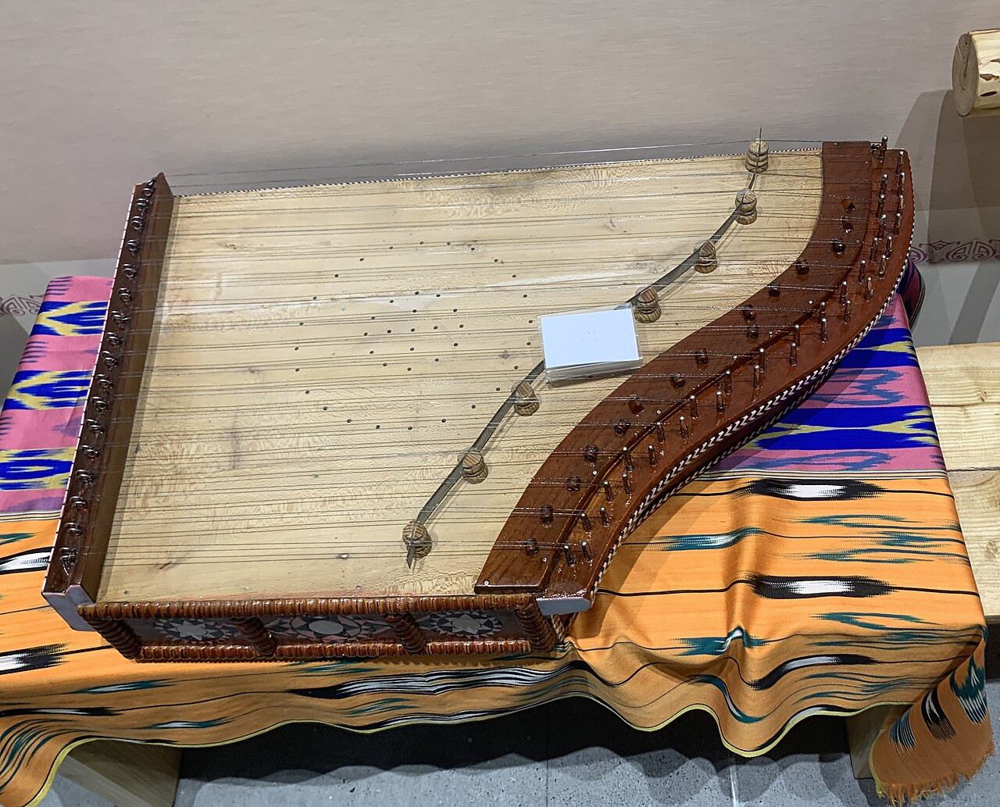

弹拨乐器 · 二弦
都塔尔
"都"是"二","塔尔"是"弦"。长颈二弦的弹拨乐器,音色温厚,自弹自唱时常伴左右,是木卡姆世界里最常见的乐器之一。
录音:调研团队现场实录 · 图片:Yuet Man Lee(CC BY-SA 4.0,公开授权)
INSTRUMENTS · 乐器之声
舞台上,每件乐器依次登场。以下录音均为调研团队现场实录——先听声音,再认识它的名字与故事。
"都"是"二","塔尔"是"弦"。长颈二弦的弹拨乐器,音色温厚,自弹自唱时常伴左右,是木卡姆世界里最常见的乐器之一。
录音:调研团队现场实录 · 图片:Yuet Man Lee(CC BY-SA 4.0,公开授权)

半球形琴身蒙以皮革,音色明亮有力。热瓦甫分高音、低音两种,木卡姆合奏中常担任旋律声部,拨弦如珠落玉盘。
录音:调研团队现场实录 · 图片:Sraperfecta Audrey(CC BY-SA 4.0,公开授权)

一共十三根弦——一根主奏弦,十二根共鸣弦。弓弦起落间音色苍凉悠远,木卡姆的序曲,常由它缓缓起首。
录音:调研团队现场实录 · 图片:Wikimedia Commons(CC BY 3.0,公开授权)

长颈弹拨乐器,张以钢弦,音色清脆华丽,演奏技法细密。指尖翻飞之间,旋律如溪流般连绵不断。
录音:调研团队现场实录 · 图片:Wikimedia Commons(CC BY 3.0,公开授权)

梯形琴体上张满琴弦,演奏者以拨片击弦,音色清亮如流水。它来自遥远的西亚古调,在绿洲上安了家。
录音:调研团队现场实录 · 图片:Wikimedia Commons(CC BY-SA 4.0,公开授权)
木框蒙皮,以手指与手掌敲击。它是木卡姆的心跳——歌与舞的起落、快慢、情绪,都由这一面鼓来掌控。
录音:调研团队现场实录 · 图片为同族乐器参考图(CC BY-SA 2.5,公开授权)

这段录音只有乐器声,没有讲解。根据频谱分析:前段特征接近热瓦甫的拨弦,后段稳定匹配萨塔尔的弓弦音色——像是一段"热瓦甫引子 + 萨塔尔主奏"的木卡姆开篇。
录音:调研团队现场实录 · 乐器判断基于声学特征分析,仅供参考,欢迎指正。
所有录音均为调研团队在田野现场录制,为去除讲解人声已做了裁剪,仅保留乐器演奏段落。